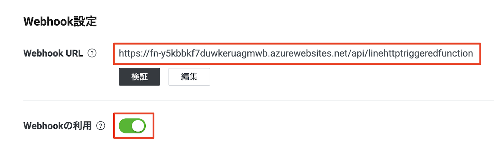

概要
LINE Botを作りつつ、Messaging API(および周辺の技術)の基本的な使い方を学んでいただければと思います！
当日の持ち物
- LINEがインストール済みのスマホ
- ChromeがインストールされたPC（Chromeのバージョンは最新のものを使っていただければと！）
事前準備
- GitHubアカウント作成
- Azureアカウント作成
- LINEアカウント作成(こちらのサイトでログインできるかどうかを確認ください)
使用するサービス・ツール
- Microsoft Azure
- Azure Functions, Azure Storage
- Gitpod(月50時間無料)
- GitHub
構成図
（作成中）
注意事項
若干、Microsoft Azureの課金が発生する可能性があります。それ以外は課金など発生しません。
チャネルの作成スタート
https://developers.line.me/ja/services/messaging-api/ にアクセス。
「今すぐはじめよう」のボタンを押して進めていきましょう。

「LINEアカウントでログイン」を押してください。

LINEのログインを求められるのでログインしてください。

チャネルの種類
Messaging APIになっているか確認します。

プロバイダ
既にプロバイダーを作っている場合 → 利用するプロバイダーを選択しましょう。

初めて → 新規プロバイダー作成を選択しプロバイダー名を入力しましょう。
（LINEという文字は含められません。）

チャネルアイコン
チャネルアイコンを登録しましょう。（今回は必須ではありません）

チャネル名、チャネル説明
下記を入力しましょう。
チャネル名：「HappyHackBot」
チャネル説明：「HappyHackBotです」

大業種、小業種

メールアドレス、プライバシーポリシーURL、サービス利用規約URL
メールアドレスを確認しましょう。
プライバシーポリシーURLとサービス利用規約URLは入力しないで大丈夫です。

作成ボタン
下記２点の利用規約にチェックをして「作成」ボタンを押しましょう。

「OK」を押しましょう。

「同意する」を押しましょう。

LINE公式アカウント(LINE Bot)と友だちになる
QRコードで友だち追加
「Messaging API設定」タブに移動し、QRコードを読み取って、友だち追加をしましょう。

チャネルシークレット、アクセストークンの取得
「チャネル基本設定」タブからチャネルシークレットを、「Messaging API設定」タブからアクセスキーをそれぞれ取得します。
- チャネルシークレット


- アクセストークン


応答モードをOFFにする
LINE Official Account Manager 画面にアクセスして、Botの「応答モード」設定をOFFにします。（デフォルトの設定はONになっており、メッセージを送るたびにデフォルトのメッセージが返ってきてしまうため）


GitHubリポジトリのFork
https://github.com/mochan-tk/Happy4Hack2021-LINE-Bot-template にアクセス。
右上のForkボタンを押して自分のGitHubアカウントにリポジトリをコピーしてください。
Gitpod起動
下記のURLで赤字の部分を自分のGitHubアカウント名に変更してアクセスしてください。するとGitpodの環境が立ち上がります。
- https://gitpod.io#https://github.com/<ご自分のアカウント名>/Happy4Hack2021-LINE-Bot-template

Botサーバーの用意
Gitpodのターミナル上で下記のコマンドを実行していってください。

- 実行するコマンド
az upgrade
az bicep install
## 下記を実行し表示されたURLにアクセス、さらにコードも表示されているのでURL先に設定してログインを実施する
az login
## 下記を実行でAzureのサブスクリプションIDを取得
az account list \
--refresh \
--query "[].id" \
--output table
## <your subscription id>の部分を、上記で取得したAzureのサブスクリプションIDに置き換える
az account set --subscription <your subscription id>
group_name=20211027HappyHackLineBot
az group create --name ${group_name} --location japaneast
az configure --defaults group=${group_name}
## ココでramdomな値を取得 > https://1password.com/jp/password-generator/
## secretとaccessはLINE Developersのチャネル設定でメモした値を入れる
az deployment group create --name deployPrj01 --template-file main.bicep \
--parameters ramdom=<ramdom> \
--parameters secret=<secret> \
--parameters access=<access>
実行後のAzureリソースは下記のような構成。
アプリケーションコードのデプロイ
Gitpodのターミナル上で下記のコマンドを実行していってください。ここまでの手順で作成されているAzure Functionsにアプリケーションのコードがデプロイされます。
- 実行するコマンド
cd /workspace/Happy4Hack2021-LINE-Bot-template/deployPrj01/
## 下記実行で、作成したAzure Functionsの名前を取得
az deployment group show \
-g ${group_name} \
-n deployPrj01 \
--query properties.outputs.functionAppName.value
## <functionAppName>の部分を、上記で取得したAzure Functionsの名前に置き換える
func azure functionapp publish <functionAppName> --build remote
上記、実行後は下記のようにURLが払い出されるのでメモしておきます。（Webhookの設定で使います）

Webhookの設定
LINE Developersのコンソール画面に戻って、「Messaging API設定」タブから上記で取得したAzure FunctionsのURLを設定します。これでLINEのBotを動かす準備は全て整いました！

動作確認
さっそく動かしてみましょう。トーク画面からBotに対してメッセージを送るとオウム返しでメッセージが送られてきたと思います！

OAMでリッチメニューの設定
LIFFもいいけどリッチメニューを触ってみよう！ / 内西 功一 / LINE Developers Community REV UP 2021
課金が気になる方は、下記のコマンドを実行してリソースグループごと作成したAzureのリソースを削除してください。
az group delete --name ${group_name}よく使いそうな書式をまとめました。
見出し
見出しは作業区切りの単位として利用します。特に「見出し1」はナビゲーション(ページ)の区切りとなる特別な書式です。

テキストスタイル
太字、斜体がサポートされていますが、和文に斜体が適用されないので、結局役に立つのは太字のみとなります。下線や文字色は反映されません。
またフォントに Courier New を指定した英文は This is text のように固定幅フォントとして設定されます。

やってみよう
ここを太字にしたり Fixed text にしてみましょう。
画像
画像はインラインに貼り付けることが可能です。方法は2つで［挿入］>［画像］と［挿入］>［描画］です。画像は貼り付けが容易ですが編集ができません。描画は Google 図形描画の機能を利用するため編集が可能ですが、解像度の高い画像を用意したい場合は別途ファイルを用意する必要があります。

やってみよう
- 画像を挿入してみる。
↓ ここにカーソルを合わせて［挿入］>［画像］>［URL］
URL は https://www.petsworld.in/blog/wp-content/uploads/2014/09/cat.jpg を使ってください。
- 「描画」画像を作ってみる。
↓ ここにカーソルを合わせて［挿入］>［描画］>［新規］
- この画像を［編集］してみる。画像をクリックして［編集］

コード
コードは［挿入］>［表］で 1x1 の表を作り、セルの中にコードを書きます。またフォントは Courier New を指定します。ハイライトは自動的に識別されます(というか指定できない)
また、表の直前にリンク付きの見出し3でファイル名などが書けます。
timer_shooting.bash
#!/bin/bash
echo "$0"
echo "shooting!" | nc localhost 19000
echo "$0 END"
exit 0
やってみよう
↓ ここにカーソルを合わせて［挿入］>［表］
コードはこの Python コードを使ってください。
情報ボックス
［挿入］>［表］で 1x1 の表を作り、表の中の背景色を指定のものに設定すると情報ボックスとして表示されます。
ポジティブな情報としての「緑」とネガティブ(注意喚起)としての「オレンジ」が設定可能です。


必要に応じて利用してください。
外部コンテンツ
Youtube Videos
Youtube Videos can be embedded by doing:
Add an image in the document. The image can be a screenshot of the video for instance but it doesn't really matter since it won't be displayed but replaced by the embedded video.
Add an "Alt Text" to the image by doing Cmd+Opt+Y or Right click > "Alt Text..."
Put a Youtube video link in the Description field of the Alt Text. in the format https://www.youtube.com/watch?v=[video_ID]
Specifying a start time is not supported at this time.
Embedded Iframes
Iframes can be embedded by doing:
Add an image in the document. The image can be a screenshot of the iframe for instance but it doesn't really matter since it won't be displayed but replaced by the embedded iframe.
Add an "Alt Text" to the image by doing Cmd+Opt+Y or Right click > "Alt Text..."
Put a full URL in the Description field of the Alt Text. in the format https://www.domain.com/watch?foo=bar. Note that for security reasons, iframe embbedding is limited to an enumerated set of allowable iframe source URLs. Feel free to submit a PR if you'd like to augment that list or tweak your own version of the claat command.
ダウンロードボタン
背景色を 暗い緑1 にして、テキストにリンクを貼ります。